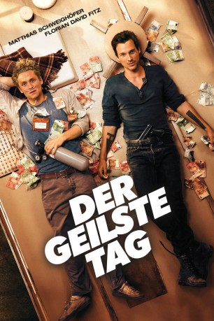
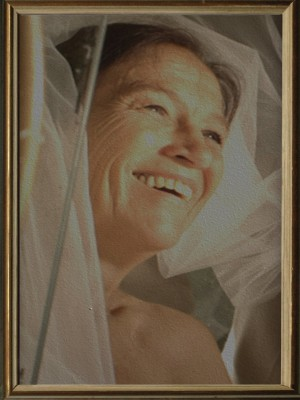

#4223 Der Geilste Tag
 
 IMDB-Wertung: 6.5 / 10
IMDB-Wertung: 6.5 / 10  Metascore: 0
Metascore: 0 
Eigentlich sind der ebenso schrullige wie ambitionierte Pianist Andi (Matthias Schweighöfer) und der Lebenskünstler Benno (Florian David Fitz) grundverschieden, eine gemeinsame Sache haben sie aber: Die beiden sind todkrank und warten im Hospiz auf ihr baldiges Ableben. Doch möchten sie ihre letzten Tage nur ungern damit verbringen, untätig in der Einrichtung auf ihren Tod zu warten. Vielmehr wollen sie, bevor es zu spät ist, das Leben noch einmal in vollen Zügen genießen. Da sie aufgrund ihrer äußerst begrenzten Lebenserwartung keine Gefängnisstrafe mehr zu fürchten haben, begeben sie sich mit jeder Menge gestohlenem Geld auf eine abenteuerliche Reise Richtung Afrika. Auf ihrer kilometerlangen Tour lernen Andi und Benno vor allem auch einiges über sich selbst und erkennen so, wonach sie eigentlich auf der Suche sind...
Jahr: 2016
Dauer: 113 Minuten
FSK: 12
Land: Deutschland Studio: Warner Bros.Tonspuren:
Untertitel:
Auflösung: 1080p (1920x808) Größe: 4802 MB
Genre: Drama
Regisseur: Florian David Fitz
Drehbuch: James Cox
Soundtrack:
Darsteller:
 Matthias Schweighöfer als Andi
Matthias Schweighöfer als Andi Florian David Fitz als Benno
Florian David Fitz als Benno Rainer Bock als Dr. Wüst
Rainer Bock als Dr. Wüst- Kabelo Bouga Chalatsane als Gang leader
- Lars Doppler als Pilot
 Alexandra Maria Lara als Mona
Alexandra Maria Lara als Mona- Caroline Rapp als L. Gottschall
 Robert Schupp als Anwalt
Robert Schupp als Anwalt-  Tatja Seibt als
- Maria Vos als Girl #1
- Nora Boeckler als Brautjungfer Sandra
- Christiane Dollmann als Radiologieassistentin
- Andreas Dubois als Rental car dealer
- Karl Friedrich als Schulze
- Jackie Hill als Waitress in Café
- Amelie Elisa Klein als Leni
- Frederic Linkemann als Polizist Frederic
- Robert Nickisch als Pfleger Reiner
Datei: X:\2016(G-M)\Geilste Tag, Der (2016, FSK12, 1920x808).mkv seit 26.08.2016
Festplatte: HD 2016(A-Z)
 Es gibt insgesamt 164 Filme in der Gruppe '2016(G-M)'
Es gibt insgesamt 164 Filme in der Gruppe '2016(G-M)'